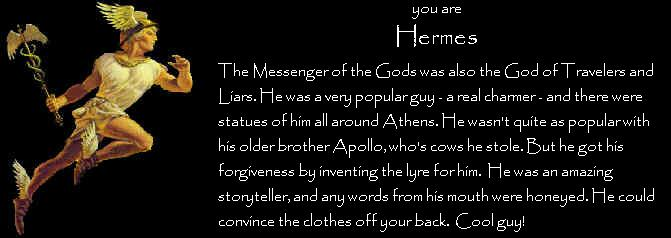

#411208 21 2008-02-21T16:09:46Z Mae PrisonBreak, Grey's Anatomy (1st time mentioned?!), American Idol, CSI:Miami

I'm not a TV-watcher, though - but I also watch Mythbusters & MTV(gawd, I'm addicted to it)
#412095 26 2008-02-25T17:14:56Z Mae Twilight by Stephenie Meyer...
...and I'm hating it. Gotta finish it though

#412325 45 2008-02-26T17:19:39Z Mae Actually - the first editions and all the proper ones that dont have the films covers on them had the althermoeter or whatever the thing is called on them.
It's the Alethiometer

The Nothern Lights name change was plain stupid. Publicity reasons obviously.
#412331 142 2008-02-26T18:20:01Z Mae Off-topic from the previous evolution-related threads...
Why is there such a (general) tendency against homosexuality? It's not a choice. It's not morally wrong, either.
However you were brought up, or however you were taught, there is no justification in discriminating against homosexuals. That said, there is no justifiction in any discrimation whatsoever.
#412503 11 2008-02-27T13:53:21Z Mae Saying DO NOT CLICK is implying that within is an object of desire whose appeal is a direct result of the knowledge that it cannot or should not be obtained or something that someone may want but cannot have.
So I clicked it.
The person above me clicked it because... well, he's still in denial. The person below me will click because they suffer from ADD.
#412505 6 2008-02-27T14:12:26Z Mae I think that changing N1.5 too drastically (including any gameplay whatsoever - or even bugs) from previous versions, will bugger up how people play N and what makes it interesting.
Unless, of course, N1.5 is going to be a completely different game, where you can't use 1.4 maps, or below. (That would be completely stupid)
What I would like to see, though, is more intergration with NUMA and Ned (and maybe even these forums). What I mean is no tedious copy&pasting. All should be possible at the click of a button.
#412685 2 2008-02-28T11:03:44Z Mae Well, you can create a level and add it to "userlevels"...And you can add it to NUMA anyway.
#412695 146 2008-02-28T13:26:28Z Mae Well, even if it was a choice (for whatever reason), it's not immoral.
#412697 315 2008-02-28T13:42:59Z Mae Total: 8397

My highest is mines, 2744.
#412698 13 2008-02-28T13:59:18Z Mae Hey this is fun!
Invariability. (Wow, how did we get from funny to this?)
#412705 2579 2008-02-28T16:19:01Z Mae Poser alert.


#412849 173 2008-02-29T04:40:40Z Mae South Africa, please?
#412850 4 2008-02-29T04:47:26Z Mae I can't find it
Maybe we could make an N application... ("We" not including me)
#412851 684 2008-02-29T04:50:55Z Mae Kanye West ~ Flashing Lights
oh... now it's
Alicia Keys ~ Lesson Learned
#412883 18 2008-02-29T13:04:00Z Mae Corresponding 
#412891 34 2008-02-29T13:44:24Z Mae All American Rejects Swing Swing
Buckcherry - Sorry
Coldplay - Speed of Sound
Daughtry Its Not Over
Evanescence My Immortal
Fountains of Wayne Stacys Mom
Green Day Boulevard of Broken Dreams
Hinder - Lips of an Angel
INXS - Elegantly Wasted
Jimmy Eat World - The Middle
Killers, The - Mr Brightside
Linkin Park In The End
Matchbox 20 - Bent
Nickelback Rockstar
Outkast Heya
Panic at the Disco I Write Sins Not Tragedies
Queen - Bohemian Rhapsody
Red Hot Chili Peppers Otherside
Staind - It's Been Awhile
TLC - No Scrubs
U2 Beautiful Day
Vertical Horizon Youre A God
White Stripes, The Seven Nation Army
X .?
Y ..?
Z ...?
#412892 6178 2008-02-29T13:53:04Z Mae A bit dull, but I like
6.5/10
#412893 175 2008-02-29T13:58:17Z Mae Thanks, but how do you get it as an option at the Location drop down list?
#412894 8 2008-02-29T14:13:23Z Mae I found a Facebook
app. Well, a pretty pathetic one, but an app none-the-less.

#412899 177 2008-02-29T14:50:35Z Mae Oh, right...
*calls upon Higher Powers*
#412914 511 2008-02-29T17:36:28Z Mae 1) NUMA intergration (as in, NUMA is no longer a website but rather within the N program itself)
2) Buttons - instead of wasting half your time copying and pasting from Ned to NUMA, to NUMA to userlevels, to userlevels to Ned... make all available at the click of a button(like a Save or Download).
3) And since everyone else has said it, User Episodes?
Btw: I don't think any tiles, objects or enemies should be changed. Keep that for another game. Other no-no's are multiplayer, weapons, RPG mode, and other stupid ideas.
#412916 2 2008-02-29T18:30:08Z Mae Umm... Not working.
#412918 134 2008-02-29T18:36:45Z Mae Songs I like at da mo...
Buckcherry~Sorry
Miley Cyrus~See You Again
Pop It Off Boyz~Crank Dat Batman
#413028 6181 2008-03-01T07:35:40Z Mae I like the animated theme, as well as how the text blends in... Cool.
8/10
#413041 14 2008-03-01T11:11:19Z Mae Um, what do you do with them?

#413054 179 2008-03-01T12:19:38Z Mae Haha! True.
Thanks, by the way.
#413057 646 2008-03-01T12:44:43Z Mae I like the 3 there instead of an "e."
7/10
#413059 3286 2008-03-01T12:53:15Z Mae I'll give it 001 out of 7 (haha.)
No, seriously...
7/10
#413079 12 2008-03-01T15:46:58Z Mae That's alot of posts for submitting a map.
Gloopinpoo, there is an Edit button to edit your posts, instead of double-posting.
#19357 1 2008-03-01T17:19:58Z Mae I do, and I was just wonderin' about everyone else...
Is there any kind of policy or general behaviour towards it?
#413092 1094 2008-03-01T17:28:16Z Mae *clicks "Fast Reply" because he doesn't have time to waste*
#413114 9 2008-03-01T18:53:53Z Mae Quote: Forum Rules
No posting in PURE CAPS. Such posts may be edited with the posts' authors warned.
Just a reminder. But...
Quote: Forum Rules
Newbies are flexible around these rules and won't be warned (except in unusual circumstances).
 Edit: ^ Oh. What he said.
Edit: ^ Oh. What he said.#413116 15 2008-03-01T19:04:30Z Mae I agree that one-ways should act like walls in wall-sliding, as well as wall-jumping. They're a bit
nasty to wall-jump up.
And about pressing the down key to go faster when falling, etc. Bad Idea. First of all, gameplay shouldn't change and...
Quote: Forum Rules
Ideas which add more keys to play will not be implemented, NO EXCEPTIONS. Please do not suggest them.
#413120 6 2008-03-01T19:16:54Z Mae Sorry, I dont no what the hell happened there ^
So, verdict is...
Spelling and grammar =
And no-one has yet chosen "No" for my question, either. (Though I don't suppose anyone who didn't give a crap about grammar and spelling would click a topic called Grammar and Spelling.

)
#413282 44 2008-03-02T11:35:07Z Mae I take them steaming like a sauna.
Just a question, do you face the taps or the shower door when showering?
#413285 21 2008-03-02T11:55:25Z Mae I've decided to keep them as is, but I do want them all to have their ratings disabled.
Um, why?

#413314 6 2008-03-02T16:48:15Z Mae Lean
#413319 1104 2008-03-02T17:25:46Z Mae *is about to ask Izzy what the hell "Alt+Tab" does, but instead tries so himself and dies in the explosion*
#413321 2 2008-03-02T17:36:58Z Mae I'm not sure I get it. Must you make a map where you have to...
Quote: Be_Happy_:)
...set off all the thwumps + get all the gold BEFORE all the thwumps are set off.
?
#413323 6 2008-03-02T17:40:39Z Mae Very good idea, but there's no way I'm judging because I want in on the contest.
Ditto! Count me in.

#413539 23 2008-03-03T18:28:08Z Mae So, when's this gonna happen? (Is it gonna happen?)
#413540 791 2008-03-03T18:36:51Z Mae Welcome Aex! We share one thing in common (a three-letter name).
Hi Matonen, although I'm not in a good position to be introducing you since you have more posts than me.

And while I'm at, I might as well introduce myself since I'm also new.
What I wanted to say, though, is maybe new users can be directed to this post when they activate their accont? I dunno, maybe they'll get a feeling of ... warm welcome and, um, at-home-ness? Just a thought.
#413542 14 2008-03-03T18:39:10Z Mae Bean.
#413543 51 2008-03-03T18:41:23Z Mae I take them steaming like a sauna.
Just a question, do you face the taps or the shower door when showering?
I face away from the tap.
Me too. But in movies they always face towards the tap...
[/moment of randomness]
#413548 3 2008-03-03T19:16:37Z Mae I agree with heatwave21. It's also kinda tedious sifting through the Newest page(s) - putting twenty maps per page would raise the chances of finding a good map quickly better.
#413773 8 2008-03-04T11:05:02Z Mae So aren't N1.5 maps going to be playable in N1.4? Well, if they use new tiles, etc?
#413793 12 2008-03-04T15:06:35Z Mae I'm meant to be doing homework right now.
Me too.

No matter how much time I spend on this forum, or the internet in general, I'll always find some time to do homework. That said, I suppose I could get better marks if I wasn't always surfing...(the net).
This is a great idea.
I /might/ actually use it some day. Oh, just an idea... Maybe there could be a part of your control panel or something where you could "suspend yourself" (and say for how long)?
#413796 17 2008-03-04T15:20:42Z Mae OR... you could have a personal setting on NUMA where you can determine how many maps-to-view a page. People with speedier connections won't really be bothered with having more (30, 40, 50?), and people with slower internet would rather keep it at 10 per page.
#413797 700 2008-03-04T15:22:21Z Mae Buckcherry ~ Sorry
#413798 10 2008-03-04T15:25:53Z Mae If they're going to change tiles, then they might as well change enemies and any other gameplay-affecting stuff, and call it N2.0.
#413801 2 2008-03-04T15:30:50Z Mae Sorry, what is that?
#413812 281 2008-03-04T16:30:13Z Mae As the Ark crashes upon the Hill, animals start pouring out two-by-two. I take the nearest elephant and whack you.
I am now King of the Hill.
#414077 40 2008-03-05T04:48:17Z Mae Well, max ride posted here... If that was the map name?
#414083 42 2008-03-05T04:55:21Z Mae Yes, I'll do the same.
#414119 11 2008-03-05T08:34:25Z Mae The "K" key is my friend.

#414163 1120 2008-03-05T16:40:22Z Mae aaah, sniperwere...you ruined it...
*thinks: "How dare ye speaketh." (But doesn't say that, of course)*
#414164 19 2008-03-05T16:41:54Z Mae Feel.
#414170 15 2008-03-05T17:28:02Z Mae I always use fast reply unless I forget how a certain smiley is typed in.
There's a smiley pop-up box in Fast Reply.
I use Fast Reply 99.9% of the time. I don't when I'm quoting (like now), or when I need to preview something to see how it looks before posting.
#19405 1 2008-03-05T18:07:20Z Mae I thought it would be a good idea if newly registered users who have activated there accounts be linked to the
Introduce Yourself thread? We'll get to know them, they'll get to know us (but that'll happen anyway, I suppose
) I've said this before but it didn't get alot of attention. Just an idea... Yes / no?
#414353 2 2008-03-06T12:59:58Z Mae I don't have any of those.

It's a close one between Wii and X Box 360, but I chose the latter because you can play N+.
#414354 656 2008-03-06T13:04:25Z Mae 9/10
'Nuff said.
#414404 109 2008-03-06T17:48:33Z Mae Numbers 27:1 ~ The daughters of Zelophehad son of Hepher, the son of Gilead, the son of Makir, the son of Manasseh, belonged to the clans of Manasseh son of Joseph.
#414410 35 2008-03-06T17:58:53Z Mae All you yanks need to know I'm Australian.
In Pop culture I am more predominant and important.
^ Has that got anything to do with...
I am everything, everything wears me. I inspire emotions and hate, I can be creative and dull at the same time. I am all too familiar to some, but non-existent to individuals.
?
#414425 16 2008-03-06T19:13:58Z Mae Just a couple that comes to mind, hope it helps.
Kanye West - Champion
Gorillaz - Dare
OutKast - He Ya!
Gnarls Barkley - The Last Time
Fat Boy Slim - Rockafella Skank
Lil Jon & the East Side Boys - Get Low
#414429 12 2008-03-06T19:21:00Z Mae #414431 60 2008-03-06T19:25:18Z Mae J. R. R. Tolkien - The Hobbit
#414433 22 2008-03-06T19:27:54Z Mae Um, no. Neither count. I'll carry on from feet...
Feel.
#414669 9 2008-03-07T12:02:16Z Mae #414671 47 2008-03-07T12:07:16Z Mae How will the judging happen? (I'm a noob at competitions)
#414672 3 2008-03-07T12:21:19Z Mae Um, mildly funny. My rating for funniness is 6.5/10.
Who made it?
#414679 77 2008-03-07T12:47:45Z Mae Hey, southpaw. Can you make me a sig? Something that goes with my avatar. Thanks.
Edit: If you want the full image...
click here. #414682 3307 2008-03-07T12:54:08Z Mae Meh... It's okay, I prefer your previous one.
6/10
#414683 1125 2008-03-07T12:56:20Z Mae *Is LMFAO... /silently/*
#414718 32 2008-03-07T16:48:23Z Mae Guy Zap, you are brilliant for sharing the lurv

#414719 662 2008-03-07T16:50:14Z Mae I like pasta...
5/10
#414722 14 2008-03-07T16:54:42Z Mae
Whats wrong mae?
Um, well. There wa- ... Err, I di- ...Ugh. But now I'm:

#19427 1 2008-03-07T17:10:50Z Mae I don't think I'm the only one who thinks that the NUMA website could've come out of the Stone Age of internet. It's not the funtionality that bothers me, but the graphics/skin/whatever you call it. I mean, compare it to this very forum.
Is it that no-one bothers to clean it up, or do people like it like that?
And please, the news "updates" on the home page must either be taken away for something more useful, or actually be
updated.
A site used regurlarly by many people should at least look like one.
Edit: All this negative talk about NUMA, may actually make you think I don't like it. Ahh!?. No, not the case. It's just the above-mentioned that, well... You've read it.#414730 80 2008-03-07T17:16:40Z Mae Thanks.
#414752 7 2008-03-07T19:54:32Z Mae I like how the simplicity of the skin complements the simplicity of n.
Simplicity doesn't have to be so, to put it bluntly, ugly.
But maybe I shouldn't talk, since I can't do it any better.
#414756 43 2008-03-07T20:04:21Z Mae \The\ most irritating game in the history of, of... of irritating games!

#414761 8 2008-03-07T20:40:10Z Mae Oh noes! Goatman is leaving! Even though I didn't know him, it's always sad to say good-bye to a forum contributor and friend.
#414895 30 2008-03-08T07:18:47Z Mae Hear.
#414897 712 2008-03-08T07:25:16Z Mae Kanye West ~ Good Morning
#414926 13 2008-03-08T13:02:27Z Mae What, you want it colored hot pink or something?
It's just pretty bland. I don't know, obviously I'm wrong.
#414960 1268 2008-03-08T15:35:18Z Mae Erm, 15/16
#414962 43 2008-03-08T15:41:13Z Mae Your avatar is simply inspiring.
#414963 9 2008-03-08T15:44:47Z Mae I use the Internet client in Windows Live Mail.
Here too.
#415021 16 2008-03-08T19:54:02Z Mae I use the school provided email client.
Yes, I forgot about that one, too.
#415039 1315 2008-03-08T20:37:49Z Mae #415192 1317 2008-03-09T08:20:23Z Mae Um, http://numa.notdot.net/browse?q=author:guy_zap&count=1 (???)
What the hell was that!? That's my latest map URL!
Yes, well there's no harm in checking that out.
")
#415194 68 2008-03-09T08:40:24Z Mae Wow...
That was like something out of a Fourth Grade lesson.
Still pretty amusing to read.
#415195 2 2008-03-09T08:46:35Z Mae It works! Who's the genius that did this? It could (and would) be really useful for map-making.
#415197 7 2008-03-09T09:09:47Z Mae Can't we implement a way for people who just register get redirected right away to that thread?
That's kind of along the lines that I was thinking.
#415201 667 2008-03-09T09:32:55Z Mae Meh...
6/10
#415236 6 2008-03-09T13:04:54Z Mae the tree is here!! >:( heh
http://i152.photobucket.com/albums/s195/fi.../Picture106.png
ROFL.
Are there going to be anymore of those "rules" maps in the thread?
#415241 42 2008-03-09T13:19:20Z Mae /Most/ of the new stuff on N+ sounds pretty cool. Wish I had an X Box.

#415262 5 2008-03-09T13:58:26Z Mae Cool font, cool theme. I gave it a 4, and all links are working.
#415264 45 2008-03-09T14:00:15Z Mae Fret.
#19446 1 2008-03-09T14:48:15Z Mae This is probably a noob question, but is it possible to jump
over a mine placed exactly in the middle of two blank squares? Well, seeing as you can walk under it, I've never been able to jump over. See image below.
Attachment (lost): post-7-1205074095.jpg
#415284 4 2008-03-09T14:54:59Z Mae Oh.

Well I'll be damned.
#415292 6 2008-03-09T15:01:52Z Mae In other words, it's uber-difficult?
#415530 6226 2008-03-10T04:37:02Z Mae Um, very...
Oh well. 3/10. Meh.
#415580 85 2008-03-10T15:25:34Z Mae omg that first one is awesome! I saw mae had it as his sig, and i thought he was a fantastic sig maker. Then i saw "sig by southpaw", and everything was explained.
I like both of them, the first one is just so... VIBRANT.
QFE. That's why I chose it. I was going to go for the second one since it was my original request but I slighty prefered the first one. Both were great.
#415596 5 2008-03-10T16:49:09Z Mae *sigh*
I think that's a bad idea. I'll compare this "N Cellphone Game" to Facebook Mobile. I'd much rather go on Facebook on my PC and get to check all my apps, invitations (grr), friends' full profiles, etc as well as having a speedy connection and see it all on a big screen (which I would not get on my phone). Ditto for N. I'd prefer to get the full satisfaction of playing N on my PC than some cellphone mimick.
#415597 6 2008-03-10T16:49:21Z Mae (Edit: Double post. Forgive me.)
#415603 22 2008-03-10T17:01:41Z Mae No... not that much luck
It's a well timed jump.
OMG.
OMG.
OMG.
First one, becuase xaelar is so amazing. Second one, because I try to do so myself...

Third one, because the next time I try to jump over one, I actually do and survive. Woot.
#19459 1 2008-03-10T17:07:50Z Mae Does anyone have the userlevels file you get when you download N? I deleted mine a while back, but kinda need it again.

#415777 2 2008-03-11T04:47:08Z Mae Welcome, Perimetric.
As a beginner, it's alright to use jump-pads in your DDA's, but as you get more experienced, you should rather go without them and find other methods of movin' N around. The same applies to gold delay. Also, you should try not have too many unnecessary objects as the load time is uber long.
Of course, though, you'll get better at map-making (and especially DDA's if that's the direction you're going). Next time you want your maps noticed, it's always a good idea to post them at the
Map-Rating Thread. You'll probably get more attention there. And if you're looking for a list of some of the best DDA's ever made,
click this. It may help.
#415778 5 2008-03-11T04:50:31Z Mae Thanks y'all.
#19475 1 2008-03-11T16:47:09Z Mae What you have to do is submit a quote. Not a forum quote or something a forumer said, but rather something someone so-called "famous" said. A celebrity, an author, a scientist, the Bible. It could be in a book, movie, song, etc. Please don't make your quote non-sensical and pointless. Humorous, yes. Intellectual, yes. Philosophical, yes. Life-changing, yes. Well-know, yes. All of the above and more, though keep your quote to a maximum of three to four lines. One more thing, don't use the "[quote]" tags, but rather quotation marks, and bold your text. Hope I made myself clear. I'll start...
"What's done cannot be undone."
- Lady Macbeth, Macbeth (Act V, Scene I)
#415888 7 2008-03-11T17:14:14Z Mae 1. Create a new user (go to Configure on N home page).
2. Activate your account with your email.
3. Go to
NUMA and log on with the user you created.
4. Click "Submit a Map".
5. Enter the map data into the box required, and the rest is pretty self-explanitory.
#415895 9 2008-03-11T17:47:19Z Mae Ironically, Mae, the first DDA on that list is infested with launchpads--"The Improbability Drive."
You know, when I was checking the link, I actually saw that. Oh well, there's an exception to every rule.
#416240 67 2008-03-12T10:26:51Z Mae (Can you do that?)
Stoned. 
#416244 61 2008-03-12T10:31:32Z Mae Ooh, dang. I just thought of a wicked name. Too late now.
Edit: WHO WON?
#416295 1166 2008-03-12T17:29:27Z Mae No, it's not Nexx.
Nexx.
#416520 2 2008-03-13T15:06:22Z Mae It's not possible to make launch pads invisible, but it is possible to place them where they can't be seen, but can be effective. I'm not completely sure how this works. Try it out for yourself, it's the best way.
#416524 6 2008-03-13T15:16:45Z Mae I got bored after the second slide. No interesting content there. I might have been compelled to read it if looked a little more aesthetic.
#416535 6263 2008-03-13T16:19:20Z Mae Brilliant. Everything works in harmony. I like how you've incorporated the links into the image. (Hey, my sig is also by southpaw.
)
10/10
#416538 290 2008-03-13T16:24:00Z Mae I hack into the timeline and wipe you out irreversably. Beat that.
I'm King.
#416540 2 2008-03-13T16:43:56Z Mae Here's what I got... Carbon monoxide poisoning, you'll pass out before suffocating - park your car in a closed garage with engine left running (a friend's family member died like that). Jumping off a building and landing head first, the damage of your spine will lead to instantaneous death. Gun to the head.
That said, there is no painless suicide. Your loss will be the pain of others.
#416716 8 2008-03-14T04:56:02Z Mae google.ca
loads fast
Mine's about:blank.
Loads faster.
#416717 79 2008-03-14T04:58:38Z Mae On. (ohh, two-letter word)
#416763 1395 2008-03-14T11:19:48Z Mae Mmmm... Never seen you plus you're pretty new.
5%
#416801 6893 2008-03-14T15:41:20Z Mae ^ its what we call a n00b map.
because well,, it was made by a n00b.
Noobism right there. ^ Rated.
http://numa.notdot.net/map/119093#416843 86 2008-03-14T20:16:54Z Mae Barn.
#417063 6907 2008-03-15T10:33:06Z Mae ^ Rated.
Babyslayer.
(Edit: Deleted)
#417064 8 2008-03-15T10:38:56Z Mae Didn't 7! and LittleViking001 use the same sigatar?
I recognize by name, especially if I see them alot around the forums. Occasionly sig if I've only seen them a couple of times.
#417065 813 2008-03-15T10:40:50Z Mae Welcome Karnage. Hope to see you around.
#417066 13 2008-03-15T10:45:50Z Mae If playtesting your maps in debug mode, you've got to be careful of that glitch. Quite a bummer really.
#417067 15 2008-03-15T10:53:12Z Mae I won't join since I'll need a bit more experience before contributing to packs, but that level kisler made is quite fun and I'd like to see what the pack turns out to be like.
#417069 2736 2008-03-15T10:56:42Z Mae Granted, but I stole them and ate them instead.
I wish I could dye my hair purple.
#417072 752 2008-03-15T11:00:23Z Mae Usher ~ Love In The Club
#417145 3 2008-03-15T17:14:42Z Mae 400x150. Being biased of course.
#417472 19 2008-03-16T17:02:42Z Mae Kisler, edit your title and first post so that people won't think that there are still two spots left.
#417474 7 2008-03-16T17:07:50Z Mae That specifically didn't happen to me, but I always used to leave out the subject box by mistake. The message would return, and then I'd type in the subject, knowing where I had gone wrong, and send it again. Lo and behold, I'd forget to type in the name of the person I was sending it to.
It's all a matter of getting used to it.
#417476 55 2008-03-16T17:15:50Z Mae Hi, my name is Mǽ!
☻
#417478 92 2008-03-16T17:23:03Z Mae Far...
#417490 92 2008-03-16T17:52:34Z Mae Can't wait for this N Magazine.
There needs to be a poll for the name of the mag (I personally vote Focus:N), and a poll for the best maps (but that's all taking place, I guess).
#417491 4 2008-03-16T17:53:43Z Mae Dude, there's already a topic for this.
#417765 8 2008-03-17T11:01:35Z Mae It's too vague. You can't really compress what is morally wrong into seven "deadly sins". Way too old school for my liking.
#417769 16 2008-03-17T11:12:03Z Mae Off-topic, who created the forum, so to speak? As in, made the code and so on.
#417808 3 2008-03-17T14:10:38Z Mae Mae enters cautiously.
#417812 6 2008-03-17T14:13:16Z Mae I use Windows.
I want to find out how it feels like to use Mac.
QFE.
I use XP Home Edition.
#417817 16 2008-03-17T14:19:46Z Mae I'll be Benjamin Silvers. He's the evil dude.
#417818 17 2008-03-17T14:19:55Z Mae .
#417819 18 2008-03-17T14:20:28Z Mae I'll be Benjamin Silvers. He's the evil dude.

#417822 7 2008-03-17T14:25:59Z Mae #417825 6 2008-03-17T14:29:09Z Mae Mae is watching all this commotion, silently, plotting...
Mae picks up the stone.
#417827 9 2008-03-17T14:31:05Z Mae I use a Fujifilm FinePix S5700.
#417828 46 2008-03-17T14:35:36Z Mae I'll be a judge.
#417837 106 2008-03-17T15:23:36Z Mae 14 years, 43 days, 1 hour, 25... no, 26 minutes
#19563 1 2008-03-18T04:58:22Z Mae I thought it would be useful to see how many bitesizes a person has on NUMA. Not only that, but their maps-bitesized ratio. For example, if I had 120 maps and 15 of them were bitesized, my maps-bitesized ratio would be 120:15, or, prefferably, 8. That means that when looking at that user's "profile" you could see that every eighth map of theirs is bitesized.
I also feel that ratings are too vague to "rank" a map-maker.
#418397 8 2008-03-18T16:12:20Z Mae I like this idea.
I think, overall, NUMA should be a little more interactive.
#418411 6 2008-03-18T16:33:56Z Mae A good action map requires the player to use correct timing. Too late and you'll get hit by the gauss turret, too early and you'll collide with that drone. Non-linearity is also essential, where there is more than one route, though each route is equally challenging.
#418428 22 2008-03-18T17:31:19Z Mae I think it is completely choice. Sure, there may be genetics involved, but to go with your example, Twistkill. There may be an apple in front of me, and I choose not to eat it, but rather to starve, sure its stupid to do that, but I still have theoption to do it.
What you're saying then, is that it is a choice to
act on your homosexuality. True. Your first question, though, was concerning the origins of actually having those attractions in the first place.
You see, you may or may not have the desire to eat that apple, but actually doing so or not doing so is a different story altogether.
#418443 34 2008-03-18T17:48:30Z Mae I hear drowning is a good way to do it.
It might be, but what are the chances of you actually doing it without wimping out beforehand? That's if you're going to do it in your pool/bath, etc. You see, any method of suicide which allows you enough time to make a mental dicision to stop and enough time to actually stop before you die, has a high chance of not working. Also, while drowning may or may not be painful, it's definitely not a pleasant experience.
But then again, who are we to define painful and painless suicide, when the only people 100% sure of that, aren't here anymore.
100th post!#418451 2 2008-03-18T18:17:52Z Mae It's only about an inch or two of wasted web-page, but if a user does it persistently they should be warned in some way.
#418647 1446 2008-03-19T04:34:35Z Mae 70%
#418721 2 2008-03-19T08:20:59Z Mae Any reason why it's called Areas?
#418773 6939 2008-03-19T14:33:09Z Mae #418804 3 2008-03-19T18:31:20Z Mae Actually, I played an image map for the first time today. It adds a new dimension to the game, while not affecting gameplay. It's aesthetics revolutionized! Then again, I only rate maps on the former.
#419015 3002 2008-03-20T04:51:12Z Mae A sudden earthquake displaces all mousetraps.
#419017 5 2008-03-20T04:55:17Z Mae I like a combination of complex instrumental composition, lyrics, and vocal performance. Most would have to be the composition though.
Mmm, I have to say the same. A good beat is also essential.
#419073 11 2008-03-20T09:45:18Z Mae I suppose it is just another statistic, but it would be nice to see something other than average ratings to see how "good" a map-maker is. In the end it's all just a matter of opinion, I suppose.
#419076 17 2008-03-20T09:56:11Z Mae All my friends hate it.
;_;
QFE.
...Although I'm pretty sure I got my cousin hooked as well as an old friend. Don't know if they still play, but they seemed pretty addicted last time I checked.
#419082 176 2008-03-20T10:44:52Z Mae Has episode 23 been done?
#419086 6947 2008-03-20T10:54:55Z Mae #419114 98 2008-03-20T13:35:18Z Mae best damn sig I think I've made...
of course I'm really tired and my judgement might be off, but whatever.
Comments, Criticism, Critique? I'd really love to hear what anybody has to say about this sig, good or bad.
Okay, so your judgement might have been a bit off, but it's still a wicked sig. I disagree, though, that the colours are boring and that the "kkstrong" needs contrast. Thumbs up.
#419115 10 2008-03-20T13:39:05Z Mae ya i dont really play N to much so i don't really focus on beating it
QFE.
I have too little patience to complete episodes. I get stuck on one level, and after about ten tries I give up.
Though, I think I'm going to try, now that I've read this thread.
#419116 13 2008-03-20T13:45:33Z Mae Seeing how many times a map has been favourited would also be nice. Meh. I think I'm going too far now.
#419119 1223 2008-03-20T13:48:13Z Mae No!
Nexx!
!
#419168 687 2008-03-20T16:48:22Z Mae 5/10. Repetitive.
Really? I didn't notice that.

5.47/10
#419171 35 2008-03-20T17:01:16Z Mae About 3 times. Current sig by southpaw. (Well he was giving them away.
)
#419172 5 2008-03-20T17:06:19Z Mae the matter is that pressing "+" doesn't select the launch pad. If, for example, "gold" is selected, gold remains selected!
Some objects require an additional keyboard-mouse combination when placing that object... But I'm sure you already knew that.
Oh, and Welcome!
#419175 28 2008-03-20T17:11:25Z Mae Nothing can be done about it
Mmm... Kinda sounds like sniping to me.
Anyway, my philosophy is that maps should be rated on gameplay. Full stop.
#19606 1 2008-03-20T17:16:02Z Mae Where or how do you get inspiration for making maps? Do you need inspiration to make a map?
#419177 37 2008-03-20T17:29:28Z Mae Obviously no one can say for certain, but my guess is that perhaps "painless" suicide is not actually possible; ie. a pain is still experienced during death, only it is so quick that it seems to be non-existant? For example, let's say someone is committing suicide with a gunshot to the head. It's instantaneous death, but surely the pain of the gunshot would be experienced before the actual ceae of life? Or are our brains incapable of registering the wound and subsequent pain quickly enough?
I suppose if we're going to get technical, there is truly no painless death since there will always be pain involved in death. However, because it lasts for such a minute amount of time, we classify it as "painless". But as TK said, maybe we can't register that pain before we die. Who knows?
...Kisler, this is
Serious Discussion. No funny stuff here. Just a friendly reminder.
#419178 7 2008-03-20T17:33:43Z Mae If you're using a Mac, it's left of the Enter key or left of the Shift button.
#419225 7 2008-03-20T20:33:36Z Mae I'd also add "the process of mapping"
Ooh, what's that?
#419238 598 2008-03-20T20:45:06Z Mae #419252 6949 2008-03-20T20:59:19Z Mae #419482 8 2008-03-21T05:35:38Z Mae Hey, lay off a little. Until about a month ago I didn't know how to attach .txt files either.
That's a little different... Turtle's been here a couple
years longer than you.
Happy, um, New Year, turtle. Can't wait for the map-pack. If you're going to release some on NUMA, then only release
some. You don't want them all on NUMA, therefore there's no surprises on your map-pack.
And I suppose if you're going to have a lot of levels, it will kinda clutter up the newest page as well.
#419485 6321 2008-03-21T05:43:44Z Mae 3/10
I still can't read it though.
#419498 600 2008-03-21T06:52:25Z Mae #419513 35 2008-03-21T09:10:54Z Mae forum, but LV...
#419531 6958 2008-03-21T11:45:47Z Mae The second one isn't yours.
Rated the first one and pepi's collab.
http://numa.notdot.net/map/119642
http://numa.notdot.net/map/119525#419534 38 2008-03-21T11:59:22Z Mae Is fotf's sig...
#419535 831 2008-03-21T12:06:05Z Mae Welcome Mazemaker!
Shees, do they get the Tonight Show in Iceland?
#419536 120 2008-03-21T12:07:44Z Mae Um... Missy?
#419538 1290 2008-03-21T12:09:57Z Mae 29403 years old.
14.
#419539 833 2008-03-21T12:11:51Z Mae The Tonight show?
Yes, I was talking about his sig.
#419540 1459 2008-03-21T12:14:30Z Mae 75 yawning kitties waving at me.
#419653 3008 2008-03-21T15:40:40Z Mae A new medicine cures all cancer.
#419940 6963 2008-03-22T09:13:18Z Mae #419975 22 2008-03-22T11:26:37Z Mae NO DON'T BOTHER BEING GRATEFUL FOR AN AWESOME TOPIC OR ANYTHING. THAT'S QUITE ALRIGHT, WE CAN NITPICK SOME TECHNICALITIES INSTEAD.
Don't post in all caps, please. Verbal warning.
Can you do that? He's a global mod. Oh, right...
I, Mae, pledge to rate (and
maybe comment) all the unrated maps I find, no matter how boring or badly designed they may be.
Nice idea, now there's more chance that maps are going to get rating.
Welcome, Aethril!
#420089 4 2008-03-22T16:54:59Z Mae OK? Congrats and all, but... 33 members?
Heh.
#420093 1492 2008-03-22T16:57:13Z Mae 76%. Went up by one since I last rated you.
#420094 6368 2008-03-22T16:58:56Z Mae I praise the number 43 - 1.
Erm, 6/10
#420096 1343 2008-03-22T17:00:15Z Mae #420098 1246 2008-03-22T17:01:56Z Mae Negative.
bhz?
#420103 6966 2008-03-22T17:17:45Z Mae #420134 1782 2008-03-22T19:33:38Z Mae Banned for winning five rounds of Flashback.
#420135 18 2008-03-22T19:39:00Z Mae I'm a new map-maker, but I wouldn't submit anything I wasn't proud of, and if it turned out horrid in the end, I'll delete it.
/Edit: Oh noes! NUMA is down so I can't see all your delightfully terrible maps.
#420137 1248 2008-03-22T19:47:18Z Mae
kisler
#420140 131 2008-03-22T19:52:03Z Mae You're amazing for winning a round of guy_zap's competition!
#420352 1261 2008-03-23T08:49:03Z Mae Wrong.
beginner2
#420353 6974 2008-03-23T08:49:48Z Mae #420354 8 2008-03-23T08:59:35Z Mae Magic: The Gathering.
/me grabs his old deck, looks through lovingly.
Good days.
Ooh, and also Runescape. Wait... I still play that.
#420355 43 2008-03-23T09:19:33Z Mae How would you define best newbie? Most posts relative to the time they've been here? Participation, helpfulness? And I would think that newbies are six months in the forum and less, but a not whole year.
#420356 135 2008-03-23T09:22:35Z Mae You're only three posts away from being a MetaNut... Awesome.
#420371 7 2008-03-23T10:48:43Z Mae Read the top of the page, dude.
#19649 1 2008-03-23T11:07:13Z Mae I was just wondering how many people could bitesize maps. The more there are, the more bitesized maps there are ultimately going to be. Your opinions?
#420378 1640 2008-03-23T11:14:00Z Mae Happy Birthday to usaswim and Sonic-Fan101, as well as LV (21st is a special day).
Ooh, and a late Happy B-day to southpaw.
#420426 5 2008-03-23T12:26:31Z Mae Does anyone know how many there are?
#420427 23 2008-03-23T12:28:21Z Mae The Lion King.
Also the LOtR trilogy.
#420440 20 2008-03-23T12:53:45Z Mae Recently T3chno told me that he makes his tilesets by scattering random 5-tiles, then connecting them.
E-tiles acutally. 5 tiles in that method are ugly.
I did something like that with
this map, and it turned out quite well.
I'm quite a new map-maker, so I'm not so sure about my strengths and weaknesses yet. My method of mapping? I usually have an idea to start with, then play around with it, expand on it, so on and so forth. I end up with a product that is completely different to my first intentions, but one that I'm generally happy with.
#420445 4 2008-03-23T13:10:57Z Mae If only we all could be loved as southpaw is loved.
Nice levels, by the way.
#420448 604 2008-03-23T13:26:57Z Mae #420452 6976 2008-03-23T13:37:16Z Mae #420495 6978 2008-03-23T15:48:58Z Mae Forget that, I deleted it now. Rated T3chno's way up there.
http://numa.notdot.net/map/119808#420540 21 2008-03-23T17:51:19Z Mae I think it would be a good idea, but separate from the main game. Maybe like a "corpse mode" or something.
#420546 9 2008-03-23T17:56:18Z Mae church
Haha! So agree.
Project. (Sh**, I'm supposed to be looking at the moon tonight.
)
#420548 10 2008-03-23T17:58:40Z Mae I have bitesizing privileges. I would guess that there are around 200 sizers, of which 75-100 are still active.
Sherbet, I thought there were like 20, tops.
#420560 3 2008-03-23T18:36:32Z Mae Originally, I was called My_AlterEgo in this forum. After a few days I asked for a name change.
#420595 3 2008-03-23T20:05:13Z Mae Well, I suppose you'll just have to wait for a response from those people you messaged. You might also want to PM maestro; I'm not sure.
#420599 8 2008-03-23T20:14:40Z Mae Well it's better than the first, but you seriously need to do some upgrading. As in objects, enemies, realistic movement, etc. Let's hop that all comes in time.
#420914 607 2008-03-24T08:27:51Z Mae #420983 27 2008-03-24T12:39:48Z Mae I'm going to approach this from a hypothetical perspective.
First, if, and I mean IF, the theory of evolution is true, homosexuality doesn't work. At all. (No, I'm not an evolutionist. Yes, I think that's it's been proven false many times.)
But IF evolution was true, how would it befit the whole "surviving" aspect. The whole point of evolution is to become the most prolific, powerful creature, right? Well, homosexual being have no way to reproduce to make more of themselves... which doesn't fit very well in with the whole "how-being-gay-works" thing; which makes it impossible for them to be more gay people. And if it IS a genetic thing, then how is the trait passed down; when the only people who would have the trait never... really... have babies.
Just my opinion.
1. There will always be oddities in nature that don't correlate with the norm. Homosexuality is one of them. Just because it doesn't contribute to the survival factor does not mean it doesn't "work," as you said.
2. Nothing can truly be proven
false. And no scientist has yet disproved the evolution theory, so I don't exactly know where you're coming from there.
3. Genetics don't have to come directly from your parents. My mom has green eyes and my dad has brown, but my brother has blue eyes. That's from our granny on our mom's side. Yet eye colour is still genetic.
4. Actually the genetics could be carried down. Ever heard of a homosexual man with a wife and children? Yes. He could have passed his homosexuality down, if it were genetic.
#420988 6 2008-03-24T12:49:14Z Mae Voted.
#421000 25 2008-03-24T13:43:46Z Mae #421001 306 2008-03-24T13:46:26Z Mae I press "delete" and kisler disappears. I'm King of the Hill.
#421003 2 2008-03-24T13:48:43Z Mae and saw Little Horse
#19671 1 2008-03-24T13:53:04Z Mae I wanted to see what music you all liked. I didn't give the "mixture" option because I know everyone would choose that.
#421034 61 2008-03-24T15:19:20Z Mae I take it judges can't vote.
#421043 63 2008-03-24T15:45:57Z Mae So I guess we judges just sit and wait.
#421044 13 2008-03-24T15:49:20Z Mae Wait, isn't that a Mr.X I see in that forum? Could that be you?
#421047 1416 2008-03-24T16:01:51Z Mae This may already have been asked in this thread, but since I'm relatively new, and the thread is 48 pages, I'll ask.
Well then you look through all 48!!!!
^ Great idea, destiny.
#421133 4 2008-03-24T20:33:10Z Mae No. It ruins its simplicity.
What about simple music?
#421421 1282 2008-03-25T08:52:52Z Mae Ummmm... No.
meowmeow
#421422 6996 2008-03-25T08:59:01Z Mae #421423 14 2008-03-25T09:05:55Z Mae Those are pretty sweet ideas, even though I'm not an image-mapmaker. I especially like 9 (donkey kong), where drones can be used instead of those stones he throws down. I hope someone takes it on to do some of those.
#421425 375 2008-03-25T09:32:04Z Mae I just wanted to say that these training levels have helped me a lot.
Thanks a bunch Atilla!
QFE.
I'm 52% complete.
#421445 148 2008-03-25T12:17:59Z Mae Pail.
#421449 18 2008-03-25T13:15:54Z Mae I must admit, I'm obsessed about my ratings. Sure, I want them to be high, but its more the fact that my maps get rated at all, that I'm obsessed about. You are able to see that people are actually taking notice of your maps, by looking at your ratings or amount thereof. Additionally, putting a number to a map shows how
good people think it is - comments are much more vague, but helpful in conjunction with a rating. Putting a number to
anything can clarify a lot. That's just how the brain works. Or at least mine.
I'm completely against this pledge; not only because I want to see how well my maps do, but also the maps of others.
~Mae
#421470 610 2008-03-25T16:12:17Z Mae #19683 1 2008-03-25T18:15:55Z Mae Okay, so I was just wondering, when did you get your first bitesize. I don't want a specific date but rather something like, "my 15th map." If you haven't got a bitesized map yet, post that as well.
I personally don't have a size yet, and that's the main reason I wondering. When do people usually get their first? I only have 7 maps, as of yet, so yeah. Reply!
#421487 67 2008-03-25T18:24:01Z Mae Till Wednesday.
I can vote!
#421521 7 2008-03-25T20:25:53Z Mae Ooh, sounds exciting. Count me in.
#421522 4 2008-03-25T20:29:49Z Mae I've got iTunes but that's never happened to me. Like grassman said, possibly an unreadable symbol (that appears to be attached to the end of each song title, artist and album
), but it looks like a general error to me.
God, that would irritate me to death.
#421523 150 2008-03-25T20:32:25Z Mae I'll join... I suppose. I'm not brilliant at mapping, though.
#421787 14 2008-03-26T10:16:17Z Mae I had map 120120, but I deleted it for a resub.
#421788 154 2008-03-26T10:17:15Z Mae Math.
#421833 7002 2008-03-26T12:15:54Z Mae I've already rated Condog's, so I rated Xlash.
http://numa.notdot.net/map/120129#421840 24 2008-03-26T12:29:10Z Mae I'll be your fan.
#421841 6 2008-03-26T12:30:33Z Mae Pretty amazing. That sound it makes would drive me insane.
#19693 1 2008-03-26T12:49:40Z Mae Finally, a thread where you can post
your favourite videos from YouTube (or any other video broadcaster), and view what other people are also digging. Don't be shy - post your favourite humorous, current, or down-right amazing videos - even music, trailers or home-made videos are welcome here. Comment on other videos posted as well.
I'll start with something I found today... (ignore the first 50 seconds)
http://www.youtube.com/watch?v=K2cYWfq--Nw
Get posting!
#421850 138 2008-03-26T13:49:59Z Mae Um, what does RTF mean? I see "RCE and I'll RTF" in a lot of map descrips.
#422259 14 2008-03-27T08:06:31Z Mae Wow, I never knew "dumb" was a swear word.
But it's quite a comprehensive list you got there. You may have forgotten some words but whatever.
I though a warning system would be quite useful. For example, if you're caught using profane language for five instance or so, your account will get suspended for a couple of months.
Filters are too strict, maybe, and merely advising people not to swear wouldn't work I think.
#422263 218 2008-03-27T08:25:16Z Mae Change all their names to Fish Corpse the Mouldering, then respond to the complaints with messages saying you'll be out of the office for an indefinite period. That'd teach 'em.
... Says you moderators ...
#422265 107 2008-03-27T08:34:58Z Mae As for why privatecontest isn't working, is it possible that mam and Mae submitted those scores with version 6b?
Nope, I'm pretty sure I've got 6c, whatever it's called. (Btw, where would you find out what version you've got). But it doesn't matter about my (down-right pathetic) highscore because I'm not even in this competition. I'm a judge...
")
#422275 6418 2008-03-27T09:41:45Z Mae 9/10. The colours work well, and the text blends in nicely.
Edit: Sorry, I rated squibble's
#422276 115 2008-03-27T09:43:37Z Mae Ponies are sooo...
#422278 7009 2008-03-27T09:57:14Z Mae #422279 36 2008-03-27T10:05:56Z Mae Woo, top of the list baby.
I was just looking at how we're getting marked, and I'm wondering how we can get rated on aesthetics when we're not actually making the tileset?
#422280 2 2008-03-27T10:35:10Z Mae You soo took my idea.
#422283 613 2008-03-27T10:47:24Z Mae #422284 4 2008-03-27T10:49:41Z Mae Hahaha! Wow, there are some sick-minded people.
#422299 9 2008-03-27T13:06:05Z Mae ........Yes please!
actually, that option was later added by a mod...it wasn't there when i voted 
Heh, ditto.
Not that I'm complaining.
Who added that anyway?
#422302 20 2008-03-27T13:13:45Z Mae Every last genre imaginable. I'm a musical lexicon.
I would say the same, except that I have no idea what lexicon means...
lexicon is a system of a language, like a vocabulary.
Therefore Blizz is a musical system of language?
#422304 13 2008-03-27T13:17:16Z Mae Also, it's called N, not n game. Never call it n game again.
BWAhahaha!
#422321 15 2008-03-27T14:46:44Z Mae I've never sniped a map before by any definition stated here, though I think I might start because some maps are way too overrated.
#422330 18 2008-03-27T15:06:30Z Mae I think I skipped a couple of versions, but this is definitely an improvement. And since I've never used (or even heard of) this Game Maker 7, is it capable of making a game which equals the gameplay of N?
#422372 1537 2008-03-27T19:32:46Z Mae 75 percentages.
#422376 7014 2008-03-27T19:43:43Z Mae #422670 6426 2008-03-28T07:12:18Z Mae Haha, I like T3chno's Digimon
7.5/10 for fotf
#422672 7026 2008-03-28T07:22:43Z Mae #422715 68 2008-03-28T12:32:56Z Mae 1. $0; Im happy with my appearance
2. No; music trumps soul-mate
3. Loch Ness; who cares about the president?
4. Last time I checked, NFL was for humans
5. I wouldnt read the book; better safe than sorry
6. Um, duh! Were talking about magic here!
7. No; I have more nightmares than dreams
8. No; if shes dead, theres nothing you can do about it [/heartless moment]
9. The importance of abstinence
#422723 615 2008-03-28T13:55:26Z Mae #422735 7028 2008-03-28T14:57:55Z Mae #422764 302 2008-03-28T17:30:41Z Mae #422829 6435 2008-03-28T21:07:22Z Mae 2/10
1. Spoiler tags aren't working (Edit: My bad.)
2. Animation is so bad it's actually humorous
3. What's up with those characters?
#422833 9 2008-03-28T21:18:56Z Mae Nice website! One thing; your introductory paragraph near the top of the page written in scribble text is a bit hard to read. I dunno, just looking out for the visually impaired.
#422834 30 2008-03-28T21:28:47Z Mae Mercy by Duffy. The most goddamn annoying song ever!
http://www.youtube.com/watch?v=KE2orthS3TQ#422838 9 2008-03-28T21:44:52Z Mae Well, some of those maps you deleted didn't deserve to be deleted, imo. Some, though, definitely did. I'm probably going to do this one day.
#423061 7034 2008-03-29T09:22:12Z Mae #423062 1650 2008-03-29T09:24:39Z Mae Woot! Happy Birthday gay_zap and Life247 (29403, you spelt his name wrong!!!)
#423063 6 2008-03-29T09:26:45Z Mae I myself suffer serious Trypanophobia and Arachnophobia.
Trypanophobia is the irattional, but severe phobia of needles.
I so have Trypanophobia.
Also heights and bugs freak me out.
#423065 66 2008-03-29T09:33:28Z Mae Nickelback >>>
The Killers
#423095 72 2008-03-29T12:31:53Z Mae Xzibit
#423161 124 2008-03-29T17:18:06Z Mae Heh, to save me embarrassment, do
not look at my run.
#423167 126 2008-03-29T17:48:10Z Mae is it too late to join?
I think its too late now. This is a part highscoring, part map-making competition and you missed the latter.
#423168 4 2008-03-29T17:50:34Z Mae My little version.
Attachment (lost): post-10-1206813076.txt
#423171 7039 2008-03-29T17:58:05Z Mae #423227 6 2008-03-29T20:10:44Z Mae Your map didn't have any enemies, which are essential for a good action map. Otherwise, I really liked the tileset you made. Are you registered with NUMA?
#423229 130 2008-03-29T20:13:44Z Mae I like it without private contest, strictly because I am bad at finding my own routes.
Bwahaha!
Me too.
#423237 31 2008-03-29T20:32:53Z Mae Perfectly honestly, I don't like your current sig. There's no real focus and the colours are dull.
Not, of course, that I'm a pro image-creator (I'm actually not an image-creator at all.
) But I love the Mosh-style image.
TMNT Wallpaper - Agree with southpaw that Michelangelo could be a little less prominent, but otherwise a great wallpaper!
Star Wars sig - Nice, but where's Chewbacca?!?!
Glenno sig - Looks awesome, but it could look better if the hood wasn't chopped of and the sword hilt stuck out. Ooh, and if there was a border around the sig, behind the elf and his sword, it would be awesom
er.
Sooo, where's my dedication?
#423242 83 2008-03-29T20:43:16Z Mae 10.
I haven't read the book or heard the song, so I can't really answer this...
QFE.
11. Why sacrifice innocent creatures for prisoners. Hell no.
#423610 12 2008-03-30T17:04:37Z Mae This is so awesome. Ad, how do you do yours?
My only complaints about this are:
1) When you're not falling or pressing any keys, you just suddenly stop or stick to the wall.
2) Its going to get overused.
#423615 25 2008-03-30T17:22:56Z Mae Okay, there's all this talk about general fear, but does anyone have an actual phobia? There's a difference. Although I fear needles I don't have a phobia for them. As in, I don't sweat or have anxiety attacks, etc., when I see or experience one.
Tell me what you think.
#423619 3 2008-03-30T17:51:21Z Mae Awesome! I'll be a map-maker. There's another competition like this going on now, but you have to be both player and map-maker.
#423656 11 2008-03-30T20:09:07Z Mae The highest and lowest judge scores for each map will be excluded (similar to the Olympics).
Yes, I've heard about that. It's to eliminate extremes, if there be any bias.
Map-makers may make as many as 2 maps.
Does that mean our scores for each map will be added, or will they be averaged?
#423659 23 2008-03-30T20:21:13Z Mae yeah, i would love an action bitesize, or really just a map rated by many people, but at the moment, i am still pretty unknown as a mapper, so this will probably be a while away...
What I was going to say.
It's not so much that I want a bitesized or highly rated map, but rather that my maps actually get noticed and in a positive way. That's all really.
#423682 791 2008-03-30T20:56:37Z Mae Ferras - Hollywood's Not America
#423686 21 2008-03-30T21:01:18Z Mae As for the first one, I think "George's and Lenny's rabbits" or "George and Lenny's rabbits" are both acceptable. The first states that the rabbits belong to two individual entities, George and Lenny, while the second state that the rabbits belong a collective, "George and Lenny".
Grr.
You just so took the words out of my mouth, Atilla.
#423839 20 2008-03-31T06:12:45Z Mae South African; I was born here though my roots are British. I think I'm the only African member of these forums.
#423840 106 2008-03-31T06:19:23Z Mae 12) Of course. If she's "intellectually stimulating, consistently funny, and deeply compassionate" as you said, then sure.
#423842 98 2008-03-31T06:28:19Z Mae The man got in and saw Little Horse eating some delicious dry mango sauce zombie kebabs which were adequately satisfactory and quite filling. He was named "Ponee". Kablizzy, you need one word. Which has nothing to do with his obsession with a certain species of crocodile living in Pwn eel and USA! situated in Greater London. He said, "What has gotten into me?" Bananas. Herbs disguised as fruits. Easy to slip on. At the right moment, I positioned my foot to run onto a big pile of horse squarely up his arse. Then someone moved the pile of nasty yellow banana peels to the pit. Oh, not your PONY?! YOUR PONY IS poorly ornamented; nevertheless, yesterday my monkey fought cancer pantslessly. Or not? You I sat upon your double wookie tickle mimic; party on! Nice yo-yo, Chaz. To be, or (perhaps overly) not (yet) otherwise inclined - possibly towards preemptive organisation, nearing yogurt-like expertise. Head for the hot, stiff, erect shaft. Penis! Oh, nevermind. Yeah, Paul's oats neglected you! Pish-posh! Ovens never yell at the field mice purposefully, oh, no. Yearly, annual events transpire. Bingo! Pingo! Oingo! Ningo? Yingo! Peter Frampton. Peter Frampton! Pahahah. Oliver needed your Peter Frampton? Peter. Frampton. DOnkey NUggets ARe FOr Puddles On Nice Yachts. Perhaps our new youth prays overtime - noting Yemen People! Our notes yearn politely outwards, nosing Yiddish prosperity (or neo-Nazism). Yonder podiatry Orwellian niche yiff? Penises, orifices: not yifftastic. Pause. Okay, now yield pans, or no yolk pulls on neverending yeast. Photons of neutricity: yaptrons! Preposterous! Orthographic necrophiliacs yearn Cardamom scented wax candles, planes, oranges - no Yugoslavians will enter the large, prehistoric offerings nowadays, y'know? It's become too inundated, providing old news yet keeping it fresh. Questions need answers, damnit. How are we supposed to predict Omani necessities? Yngwie! Noun! Adjective! Verb! Interjection! The silence echoed through parabolic oscillators, nearing your pipe of normalised yardsticks. O! How the still pantaloons only need yield. Princeton ogles nesting yuccas. Please obviate narrator's youthfulness privately, obscuring nine yurts, barraging onto unruly hikers (pilgrims of New York). Passive, obnoxious, no? You pancreas owning nil-worth yak, passed our ninth yardstick before I could speculate Poe, oh, ne "Y" - Persian? Or Nigerian? Yes. Pumpkins outjump nontrivial ytterbia perilously! O, Narcotic Yeti, please outstretch nicely your pendulum, or nothing yet pawned, owing November's yawing. But nothing that God
#423845 12 2008-03-31T06:32:06Z Mae Biggest Noob of the Year.
#423880 7049 2008-03-31T10:44:30Z Mae #423898 620 2008-03-31T13:13:06Z Mae #423900 13 2008-03-31T13:23:19Z Mae Hermes I am.

I think I suit Hephaestus better, though.
#424280 25 2008-04-01T20:59:39Z Mae #424282 41 2008-04-01T21:03:30Z Mae Seeing as I've already submitted two of my maps to NUMA, I'll post them here. I wasn't quite sure if we were allowed to submit before April 1st. Here you go:
http://numa.notdot.net/map/120341
http://numa.notdot.net/map/120593#424425 26 2008-04-02T06:31:14Z Mae If I'm just going to rate maps randomly on the Newest, its a 2.
If I go to Bitesized maps, Top Rated, etc I usually rate 4.
#424454 623 2008-04-02T09:25:21Z Mae Why did you post it then? Commented anyway.
http://numa.notdot.net/map/120677#424504 7066 2008-04-02T18:21:54Z Mae #424505 7067 2008-04-02T18:22:49Z Mae #424712 706 2008-04-03T10:00:44Z Mae 7/10
#424713 109 2008-04-03T10:03:49Z Mae The image is awesome, but I don't like the text.
#424714 2 2008-04-03T10:10:18Z Mae Crazy designs is right.
I haven't played your first column, but I really enjoyed the simplicity of this.
#425210 12 2008-04-05T07:54:14Z Mae Thumbs!? WOW!!!! zOMG!!
QFE!
Thanks alot Unreality. You made my day.
#425221 7094 2008-04-05T09:44:58Z Mae #425222 28 2008-04-05T09:50:05Z Mae Xenobiosis.
Just so awesome.
#425309 638 2008-04-05T15:11:56Z Mae #425349 212 2008-04-05T17:11:43Z Mae hey im talking with you guys its like a big chat thing and stuff i think it would be a good idea to embrace the newbie players like me idk how but somehow lol anyways i just was checking how all this stuff works how do you get those sweet pictures with your name on it and stuff? write me back if you can please
Repeat that in English and with grammar. Cause I can't understand what you're saying.
Bwahaha!
I think if you are going to reset all the votes, you should go all out and completely wipe out NUMA. No maps left, starting anew. But, of course, all this should be done with a warning three months prior.
#425566 7108 2008-04-06T07:57:01Z Mae #425580 7110 2008-04-06T08:44:57Z Mae #425617 3 2008-04-06T12:17:43Z Mae x = 11 (?)
#425620 1689 2008-04-06T12:20:55Z Mae Happy Birthday, Maniac!!!!!!!
#425931 11 2008-04-07T08:22:06Z Mae I don't knit, I Knytt.
Ahahah, oh man Alas, "Knytt" isn't actually pronounced like that, but that was still great.
How do you pronounce it?
Nope, I don't knit. I might have once upon a time...
#425932 22 2008-04-07T08:27:16Z Mae I tried skating.
I failed.
#425945 884 2008-04-07T09:49:27Z Mae Welcome Arch Laughter.
Nope, Dead N, never seen you before and don't want to again.
#425946 15 2008-04-07T09:53:16Z Mae What the freaking hell are you people talking about?
I wants the secret and I wants it now!
#425947 1546 2008-04-07T09:55:18Z Mae 80 defenseless, innocent baby seals.
#425948 122 2008-04-07T09:57:20Z Mae Run, Binky, run!
#425993 2 2008-04-07T15:45:54Z Mae Submission Deadline 5 A.M. MST (GMT-7), on Tuesday, April 8st.
/gets to work
#426027 4 2008-04-07T19:43:02Z Mae #426028 95 2008-04-07T19:53:24Z Mae Usaswim corrected that.
Is it possible that you could explain the theme a bit more, or are we supposed to do with it as we wish?
#426029 653 2008-04-07T19:58:38Z Mae #426301 9 2008-04-08T15:42:18Z Mae I actually belong to a nation.
#426303 6503 2008-04-08T15:45:30Z Mae 1.782/10
#426529 25 2008-04-09T08:10:41Z Mae Feel Good Inc. I love the uplifting music in the chorus.
Seriously, I could get sick of that song just hearing its name.
Linkin Park - In the End
#426773 36 2008-04-10T09:57:20Z Mae Benjamin, eating the enlarged plant of the family Musaceae that had suddenly appeared in his hand, gains 0.073 grams of Riboflavin, giving him enough power to spring onto the mysterious box. He attacks Julio, too busy feasting to realize what's going on, and Julio falls down, far, far into the depths below...
#426774 1698 2008-04-10T10:02:23Z Mae Happy birthday, Kydo! You were born 69 days after me! Woot!
Happy (9th?) birthday, zer0!
#426873 115 2008-04-10T20:20:28Z Mae http://numa.notdot.net/map/121573
Interpreted.
There were 5 little pieces.
Oh well, good enough.
http://numa.notdot.net/map/121598
(My sub.)
#426875 7142 2008-04-10T20:23:08Z Mae #426876 7143 2008-04-10T20:23:23Z Mae #427078 1351 2008-04-11T09:17:52Z Mae No...
kisler?
#427080 27 2008-04-11T09:24:47Z Mae Who would believe a guy suddenly running into your room and saying you had 60 seconds to live?
QFE.
If I knew for certain I would die, I would go shoot everyone I hate. Hardcore.
#427083 6 2008-04-11T09:59:35Z Mae Full tilt, sounds cool.
#427089 661 2008-04-11T10:14:03Z Mae #427369 13 2008-04-12T07:54:24Z Mae Actually, I have a ritual that each day I eat a chocolate-coated energy bar anywhere between 1 and 5 o' clock.
#427396 1372 2008-04-12T11:38:01Z Mae No
Err, Evil Bob
#427397 7151 2008-04-12T11:40:36Z Mae #427567 40 2008-04-12T17:26:01Z Mae Benjamin spun around. It was the Grim Reaper. *cue the music* Benjamin pointed him Gary's way, but noticed that Gary wasn't yet dead! (Of course he had severe internal injuries and didn't have long to live.) The dying man was trying to say something and Benjamin had to stop him before the others found out...
#427959 1164 2008-04-13T07:46:58Z Mae *eats a cookie*
#427961 33 2008-04-13T07:59:16Z Mae It's brilliant. I suggested this a while back, and someone is answering my call.
Welcome to the forums!
(Did Sniperwhere pay you for that shameless advertising?)
#427962 9 2008-04-13T08:02:53Z Mae Pretty awesome. Better than Harm-Less's.
#427963 7 2008-04-13T08:04:04Z Mae I'm sure this has been done before.
Anyway, mine is Prison Break, American Idol and Grey's Anatomy.
#428069 26 2008-04-13T15:20:14Z Mae I'd love to help you. Here's my idea for the layout for a single map, with a few added features and some clipboard accessing (which should be okay to implement).
I do not like buttons for copying data. I want to be able to see the text in front of me and copy it like we do now.
No ways! Copying the map data is tedious. There can be a button and the data.
#428079 5 2008-04-13T15:38:05Z Mae Me and maestro
#428080 1717 2008-04-13T15:41:01Z Mae Happy birthday Mopman and Guardian Duo!
#428130 11 2008-04-13T18:53:09Z Mae I'll have to go with the first one too.
#428370 46 2008-04-14T14:13:16Z Mae Nice magazine, but I found a lot of difficult to read. It needs better fonts.
Exactly. Can this be made available as a web page?
Otherwise great stuffs.
#428371 24 2008-04-14T14:17:34Z Mae Third one's nice. Still prefer the first.
#429026 1434 2008-04-16T14:32:48Z Mae No
Nexx
#429043 19 2008-04-16T17:13:17Z Mae There could be a variety of different death actions, selected randomly when he dies.
I don't see how he could perform seppuku when he gets killed by zap enemies.
#429303 13 2008-04-17T13:03:55Z Mae Cricket and field hockey.
Sport is compulsory at my school.
#429308 146 2008-04-17T13:38:00Z Mae I totally agree with clean talk too. I mean I cringe when I hear the word 'chick'. I hate dislike ( ) that word with a passion. That is a derogatory term.
Where I come from, "chick" isn't offensive when referring to women (or referring to anything/one for that matter
). "B**ch" is the more offensive word.
... But that's where I come from.
Masturbating to orgasm is definitely possible without thinking lustful thoughts.
#429614 44 2008-04-18T20:12:52Z Mae Clydesdale. It's a certain breed of horse. I just love saying it.
AraAppaloosa sounds better.
#429618 1452 2008-04-18T20:15:51Z Mae No
Be Happy
#429620 1374 2008-04-18T20:17:01Z Mae #430136 17 2008-04-20T08:53:10Z Mae Mare. It is only a letter that divides us.
#434387 28 2008-05-07T18:55:30Z Mae A bulldog called Phoebe.
#434390 20 2008-05-07T19:16:26Z Mae Soft-serve with a Cadbury's flake in the middle.
#434391 6631 2008-05-07T19:19:46Z Mae Unique and abstract, though dull.
7/10
#435817 152 2008-05-13T16:13:36Z Mae Three Days Grace
#438314 9 2008-05-22T11:06:14Z Mae Fractions are ten times more useful than decimals.
#445251 1598 2008-06-16T12:07:53Z Mae 60 animated stick thingies.
#445255 94 2008-06-16T12:27:22Z Mae Love these.
May I have one? Any theme.
#445324 54 2008-06-16T18:24:14Z Mae Apart from N, NFS ProStreet on PS2.
#445325 1447 2008-06-16T18:25:30Z Mae [SIZE=-7]
#445329 128 2008-06-16T18:39:37Z Mae Animator --- Love how the mushroom dude blends in with the galaxial phenomena. (if that's what it is) 8/10
Communist --- The colors and text are perfect. The image does nothing for me though. 6/10
Fotf --- Space monkey! The blur was effective with the complementary colors. 9/10
#445330 6879 2008-06-16T18:44:43Z Mae 10/10
Say no more, Obama.
#445332 1601 2008-06-16T18:47:42Z Mae 78 and five quarters of a Lemmy Koopa.
#445333 1602 2008-06-16T18:48:49Z Mae *Double post*
#445334 1603 2008-06-16T18:50:56Z Mae *Triple post*
#445616 204 2008-06-17T15:05:13Z Mae o yeah. with the new site, i THINK it's possible to spam maps, so you have more than 2 on the newest page.
It's pretty annoying when there's one n00b map covering half the page.
#445664 25 2008-06-17T17:54:42Z Mae In order:
1. Coldplay
2. Linkin Park
3. Red Hot Chili Peppers
4. Gnarls Barkley
5. REM
6. Gorillaz
7. Daughtry
8. Panic at the Disco
9. Maroon 5
10. Daft Punk
#445668 6892 2008-06-17T17:58:58Z Mae 9/10

the painting.
(The spoiler section is a bit messy though.)
#446408 31 2008-06-19T17:39:59Z Mae IMO, i don;t think people should create threads just to tell that they have finished N... but oh well... congrats...
Surely completing N deserves you your own thread. How often does someone complete N, anyway?
Congrats, dude!
#446412 1621 2008-06-19T17:44:16Z Mae 60%
#448536 415 2008-06-25T15:28:33Z Mae He was amazed into coming back from the dead. We are the orangutans who kidnapped Elvis and made faces at orangutans from Antarctica. Meanwhile, the stupid geniuses who thought that nuclear-radiation was good for powering hair dryers were playing Pong on a coffee table. Their lemurs, however spiritually inclined, didn't
#449055 117 2008-06-27T10:28:48Z Mae Thanks for mine. Awesome.
#454069 303 2008-07-20T17:48:20Z Mae Smoked duck.
#454071 6 2008-07-20T17:55:06Z Mae Waking cadaver.
#457130 2 2008-08-01T16:19:20Z Mae Looks different. Very different.
#457135 244 2008-08-01T16:28:00Z Mae Last 10 Posts [ In reverse order ]
kayix Posted on August 01, 2008 04:20 pm
Timmy:Got any threes?
Cosmo:Whats a three?
Kayix:The thing with the bumps on the right.Here, take mine.*Hands over 2 threes*
Happened in my imagination.
Eiturlyf Posted on August 01, 2008 09:55 am
Astronauts can't eat green beans before launch. Too much gas can damage their suits.
>stardeash Posted on August 01, 2008 05:17 am
~Christina~(#):
cool;;
~Christina~(#):
alrighty, i'll c u tomorrow then;;
~Christina~(#):
nighty night
runningninja Posted on August 01, 2008 04:54 am
Cheese.
Agent 001/7 Posted on August 01, 2008 02:33 am
SATANIC HEAVEN
#457860 2 2008-08-03T13:42:31Z Mae Really awesome, especially Wall-e.
The first one is quite bland, though.
#475313 12 2009-05-09T12:14:16Z Mae What? I can post here?